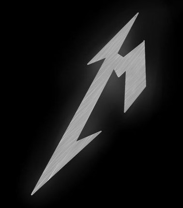

The Unforgiven trilogy is one of the most iconic and emotionally profound narrative arcs in Metallica’s catalog, spanning three distinct songs that explore themes of guilt, regret, redemption, and personal struggle. Beginning with The Unforgiven (1991) on their Black Album, the trilogy delves into the journey of a protagonist grappling with the complexities of self-identity, societal expectations, and inner turmoil. In The Unforgiven I, the protagonist reflects on the suffocating pressures placed upon him, the emotional scars of a harsh upbringing, and the loss of freedom. The song’s haunting melody and poignant lyrics introduce a deep emotional vulnerability that contrasts with Metallica’s aggressive image. The story continues in The Unforgiven II (1997) from Reload, where the protagonist finds himself trapped in a cycle of regret and unresolved emotions. The song evolves both musically and thematically, exploring the complexity of facing one’s past and the relentless nature of self-doubt. Finally, The Unforgiven III (2008) brings closure to the trilogy in Death Magnetic, capturing a sense of resignation, acceptance, and ultimate release. Here, the protagonist reflects on the long-lasting effects of his struggles, and the song ends on a bittersweet note, echoing themes of redemption and the search for peace after years of inner conflict. Together, the Unforgiven songs not only chart the emotional and psychological journey of a single character but also showcase Metallica’s versatility as a band. While the songs span different musical periods—from the heavy, somber tones of The Black Album to the more polished sound of Reload and the raw energy of Death Magnetic—they remain unified by their powerful emotional weight. This trilogy stands as one of Metallica's most significant and beloved achievements, demonstrating their ability to blend hard rock, introspective lyrics, and powerful storytelling.